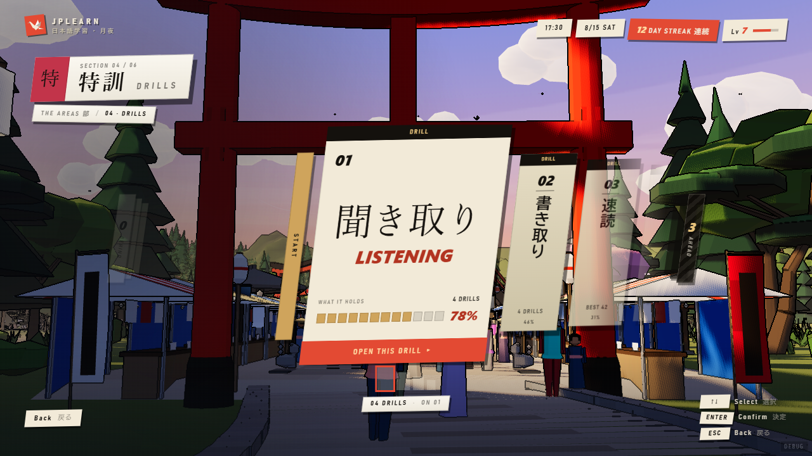

built.html documents five OBJECTS — the menu row, the road tablet, the hero card, the
heading slab, the caption chip. It is still correct about those. This card is which SCREENS they
are assembled into, and where each one is allowed to stand.
Every plate below is the real mockup at 1280×720 with the clock frozen at 17:30. One
hour for all eleven, so what differs between them is shape rather than lighting — for the ground
each section actually stands on across the day, see foundations/backdrops.html.
All eleven sit on the frame contract (foundations/frame-contract.html): the
drawing inside x 160–1120 / y 192–576, bare valley 160px either side,
whole-set summaries in the foot band. Read that card before designing a new one — in particular
the part about skew being paint rather than layout, which is what puts a screen in the moat while
its CSS looks right.
Eleven screens, three levels.
LEVEL 1
the standing menu — a vertical column of six section rows, one open at
a time
LEVEL 2
six, one per section: STUDY path · DAILY road · READING
library · DRILLS road · JLPT ascent · RECORDS ledger
LEVEL 3
four: STUDY deck · STUDY feed · DAILY road ·
DRILLS road
THE FOUR SHAPES
Every screen below is one of four shapes, and the shape follows the DATA rather than the section.
Chain — ordered and gated, exactly one item open. Peers — a small unordered set, all
available. List — a large flat set, all available, no order. Dashboard — figures you
read, not places you go. Choosing the wrong one is the mistake this menu has made twice, and
it is still made in one place — see DRILLS at the foot of this card.
THE MENULEVEL 1 · 6 SECTIONSchain
Six rows, one open at a time, the open one carrying its own state and its own next action so
there is no second panel to look at. Classes are .st-*. Documented as an object
in built.html section A.
The one screen that does not obey the contract's balance. It keeps the moat and the
bands but stays a left column with the mountain to its right — that composition is why the
rest of the interface looks the way it does.
THE CHAINSTUDY · LEVEL 2 · 16 STEPSchain
Behind you / here / ahead, and a proportional rail of the whole run beneath. Only the OPEN
item acts; everything else is context. Classes are .dk-*, shared with the deck
screen through chainMarkup.
This replaced a browsable road of sixteen doors. Ten of those sixteen could only throw you at
another section — a curriculum node is a milestone, not a door.
THE CHAIN, AGAINSTUDY · LEVEL 3 · 6 TO 76 BLOCKSchain
The same drawing and the same classes holding a different chain, shown here at twelve blocks
and at seventy-six. One drawing has to hold both, which is why the rail's segments
divide its width rather than each claiming a fixed size — 76 children at flex: 1
is 12px each, 6 is 155, and neither can overflow.
Three objects, whatever the count: how many are behind you, the one that is open, the one
ahead. That is the contract's chain limit doing its job — the alternative was nine tablets and
seventy keypresses to reach the end.
THE PILE, OPENEDSTUDY · LEVEL 3 · MODALpeers
What the "behind you" count opens: every cleared block as a paged grid, 24 to a page, so even
76 blocks is at most two pages and a grid move. A modal over its own scrim — and the stage
does not grow for modals either, so it is centred on the stage rather than on the frame.
THE QUEUESTUDY · LEVEL 3 · TODAY’S WORDSpeers
Not a chain: a queue that is REPLACED tomorrow, and emptying it is the point. The budget
control — none / 5 / 10 / 20 / 40 — is the number the whole screen is generated from, so it is
on the screen rather than in a setting. Classes are .fd-*.
Its two denominators are load-bearing: "291 of 744 readable" and "67 kanji known". Without
them "here are ten words" is a card trick.
THE LISTREADING · LEVEL 2 · 30 TEXTSlist
Thirty items, all open, none unlocking another, no correct order. The selected row grows
38→100px and only then admits its detail. Classes are .lb-*.
The clearest example of the contract's overflow rule. Six of thirty are painted, with
counts on the two edges saying where the rest went and a thirty-bar strip in the foot. Distance
from the selection is drawn as a VEIL over opaque paper rather than as opacity — a faded row
fades into the street otherwise, and you can read the road through the page.
THE DASHBOARDRECORDS · LEVEL 2dashboard
Figures you read, not places you go — there is nothing inside a streak to open. The current
run large with your best behind it in the same type at 15% ink; a year of daily activity as 52
weekly bars, height for volume and colour for accuracy. Classes are .lg-*.
It must survive a bad week: press W in the mockup for a streak of one and a year mostly empty.
A records screen that only looks good on a good account has not been tested.
THE LADDERJLPT · LEVEL 2 · 5 LEVELSchainHAS AN OPEN PROBLEM
Five columns whose HEIGHT is readiness, a 0–100 measure at the left, and both thresholds
drawn straight across all five as deliberately different marks — 30% dashed (opens the next
level), 80% solid (ready to sit). Classes are .as-*.
This screen paid the most for the contract. Measure, columns and detail panel
were three columns of demand coming to 1230px painted, and they had to become 960: the panel
went 340→288, the columns 810→530, and the plinths lost their mastered counts. It is
also the only section with no level three — the panel is doing a level three's job from inside
level two. See the brief.
AND THE ROAD, WHICH STILL EXISTS

THE ROADDAILY AND DRILLS · LEVELS 2 AND 3peersWRONG SHAPE AT DRILLS
The carousel from built.html B&C, inset to the stage. It was full-bleed on
purpose — a road that stops at the frame edge is not a road — and it survives the move because
of its mask: the road does not stop at x160, it fades there, into open valley rather
than into the glass.
It is the right shape at DAILY, which is four games you pick between: a small
unordered set, nothing locked, nothing sequenced.
It is the wrong shape at DRILLS, which is seventeen practice modes in
five skill groups drawn as four tablets. That is the same category error STUDY had — a drawing
describing a decision nobody is offered. See the brief.